08条件判断
条件判断表达式
条件的值：
- Bash中没有布尔类型变量
- 退出状态为0表示命令成功或表达式为真
- 1表示命令失败或表达式为假
- 状态变量
$?中保存了退出状态的值
条件语句
格式:
- test <测试表达式>
- [ <测试表达式> ]
- [[ <测试表达式> ]] (bash 2.x版本以上， bash --version)
说明：
-
格式1和格式2是等价的，格式3是扩展的test命令
-
在 [[]] 中可以使用通配符进行模式匹配
-
&&，||，<和>能够正常存在于[[]]中， 但不能在[] 中出现
-
[和[[之后的字符串必须为空格，]和]]之前的字符串必须为空格
-
要对整数进行关系运算也可以使用(())进行测试
条件测试表达式中可用的操作符有文件测试操作符、文件之间比较操作符、字符串测试操作符、字符串控制检测、整数二元比较操作符、逻辑运算符。
文件
文件测试主要是用来检测文件是否存在， 文件属性，访问权限等，具体见
表3-4。
表3-4 文件测试语句
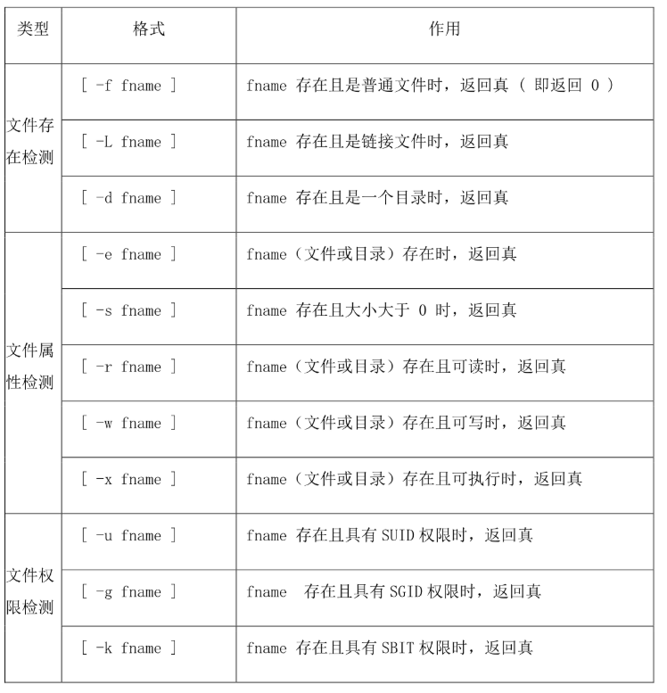
- 要求在执行脚本时，检查传入参数名的文件是否存在，存在则提示文件存在，不存在则创建（如果路径不存在，则一并创建路径）。
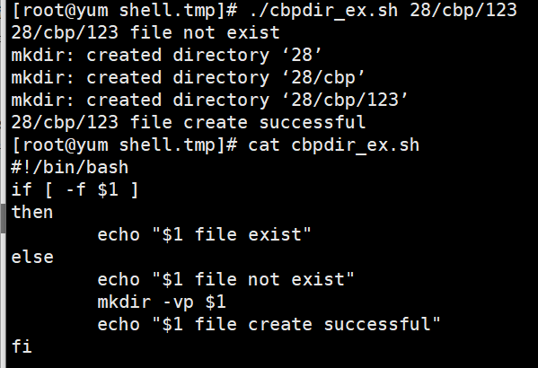
文件比较

字符串
字符串测试时条件判断中常用的，可以用来判断字符串是否为空串，也可用来测试两个字符串是否相等等
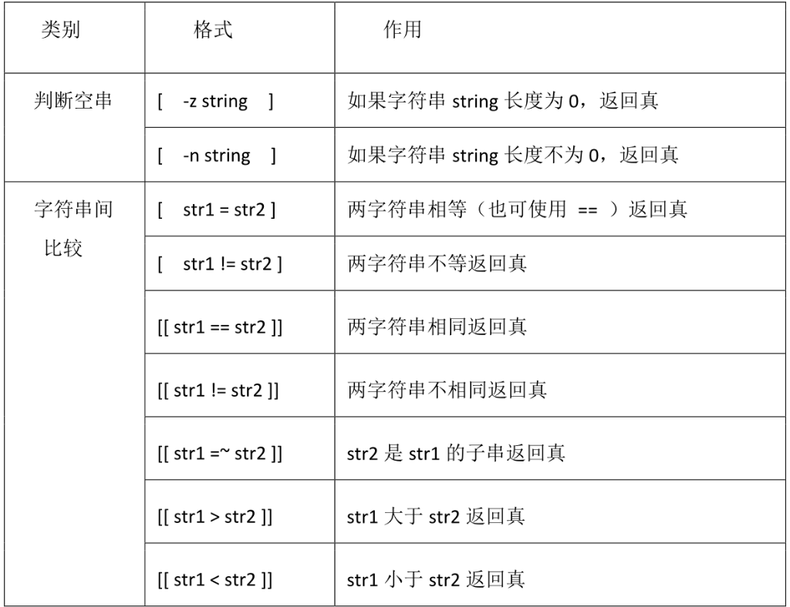
真为0 假为1
字符串变量要加""，以免引起报错
变量为空或者未定义，则长度都为0
整数
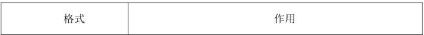
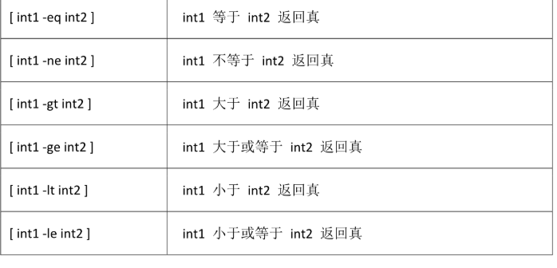
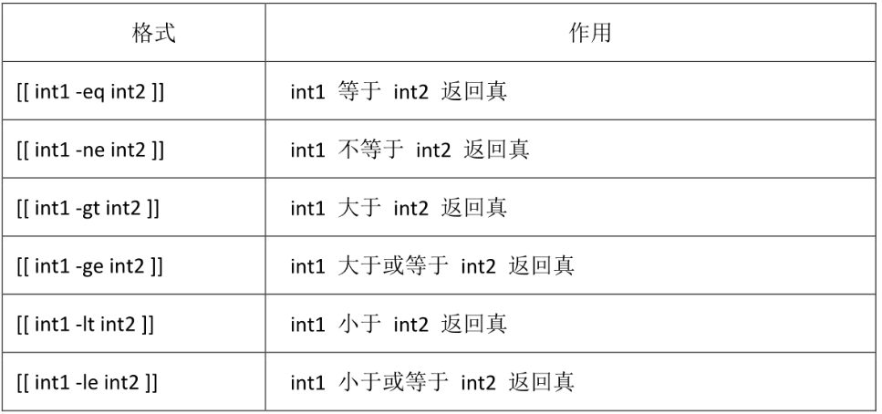
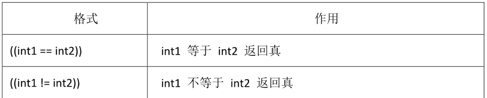
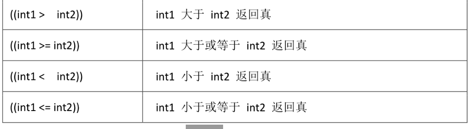
以上针对整数测试的三种方式区别如下:
- 使用的操作符不同
- let 和双圆括号中可以使用算术表达式，而中号不能
- let 和双圆括号中，操作符两边可以不留空格
逻辑
逻辑测试结果只有真或假两种情况，在进行逻辑测试时可以在[]，[[],
(())中进行
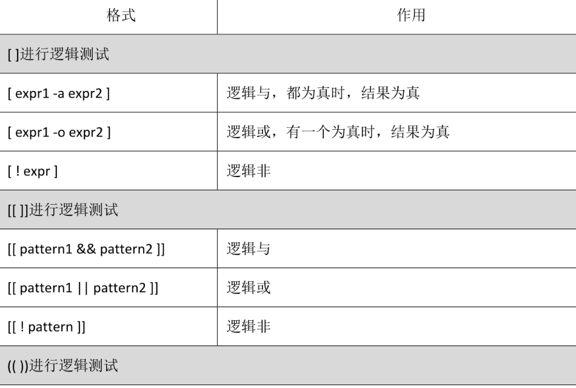
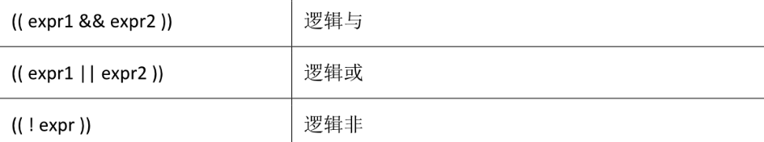
说明：不能随便添加括号；不能在(())中做字符串比较
分支结构
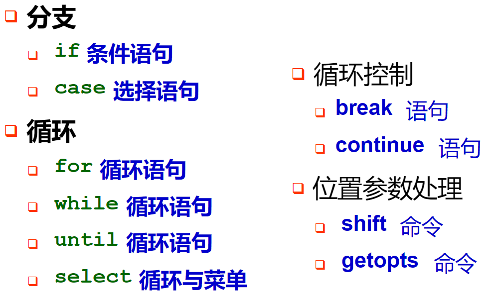
IF语句
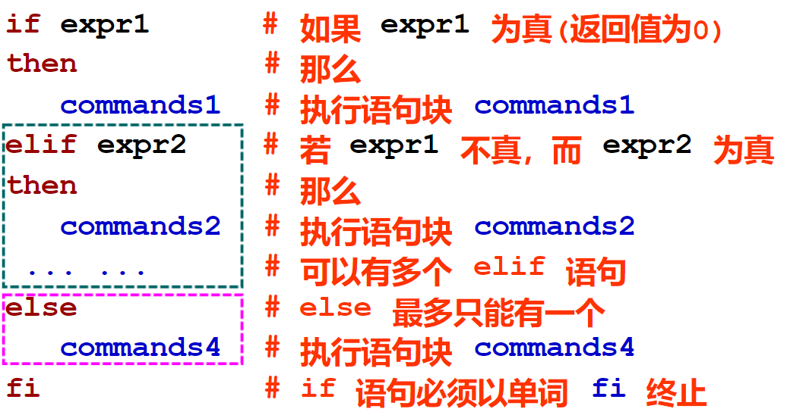
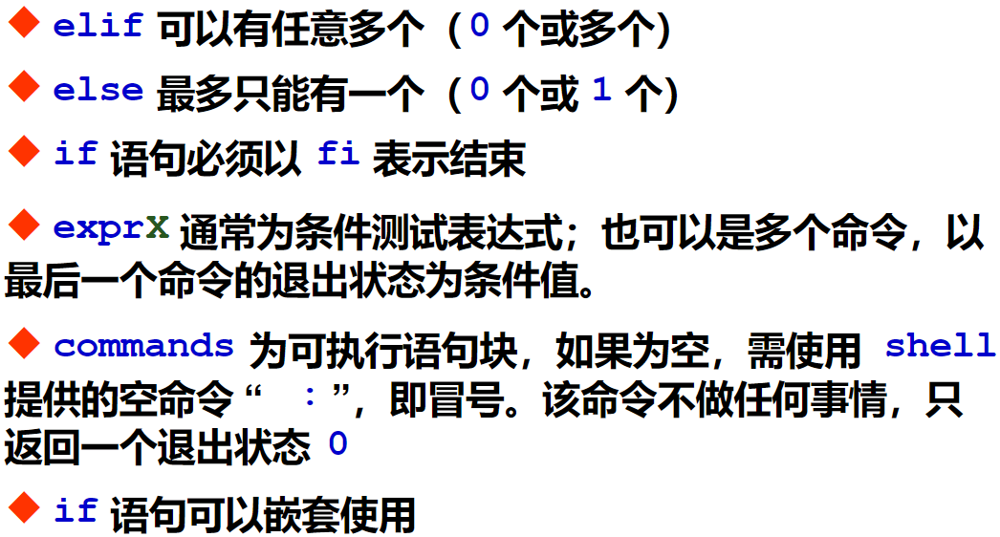
作业一：创建用户
| if [];then
elif [];then
elif [];then
else
fi
[root@Xuan shell-works]# cat user.sh
#!/usr/bin/bash
#add-user
read -p "Please input user_number:" num
#确定输入的是以数字
# =~ 包含
if [[ ! "$num" =~ ^[0-9]+$ ]];then
echo "error number"
exit
fi
# 首字符为字母，且含有数字,下划线
read -p "PLease input prefix:" prefix
if [[ ! "$prefix" =~ ^[a-zA-Z] || ! "$prefix" =~ "_"+ ]];then
echo "error prefix"
exit
fi
# 检查名字长度
name=$prefix$num
name_len=${#name}
echo "name_len:" $name_len
if (( "$name_len" > 10 || "$name_len" < 4 ));then
echo "error len"
exit
fi
#创建用户
for i in `seq $num`
do
user=$prefix$i
useradd $user
echo "123456" |passwd --stdin $user &>/dev/null
if [ $? -eq 0 ];then
echo "$user created"
fi
done
|
作业二：配置yum源
| [xuan@Xuan shell-works]$ cat yum_config.sh
#!/usr/bin/bash
os_version=`cat /etc/redhat-release |awk '{print $7}' \
|awk -F"." '{print $1"."$2}'`
echo "os_version:"$os_version
[ -d /etc/yum.repos.d ] || mkdir /etc/yum.repos.d/bak
mv /etc/yum.repos.d/*.repo /etc/yum.repos.d/bak
if [ "$os_version" = "7.0" ];then
curl -o /etc/yum.repos.d/centos7.0.repo http://mirrors.aliyun.com/repo/Centos-7.repo
echo "7.0 yum configure..."
elif [ "$os_version" = "6.0" ];then
curl -o /etc/yum.repos.d/centos6.0.repo http://mirrors.aliyun.com/repo/Centos-6.repo
elif [ "$os_version" = "5.0" ];then
curl -o /etc/yum.repos.d/centos5.0.repo http://mirrors.aliyun.com/repo/Centos-5.repo
fi
|
CASE
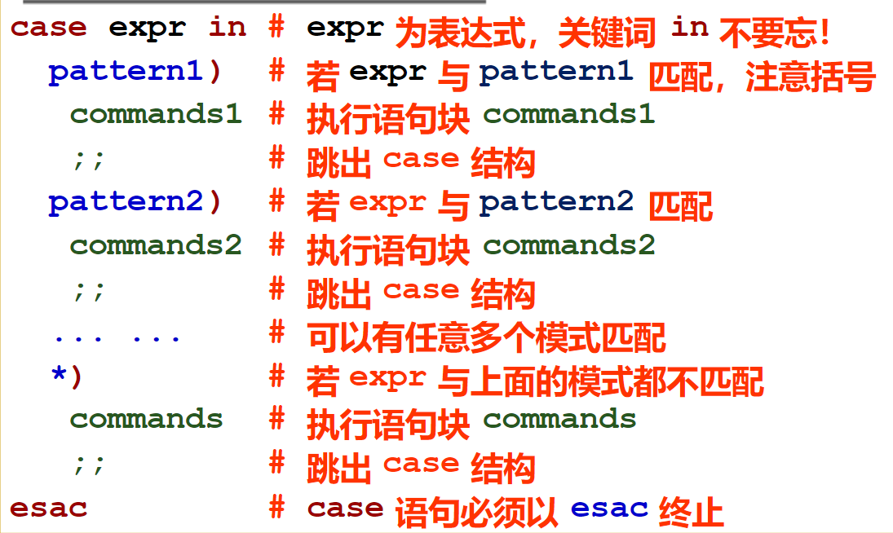
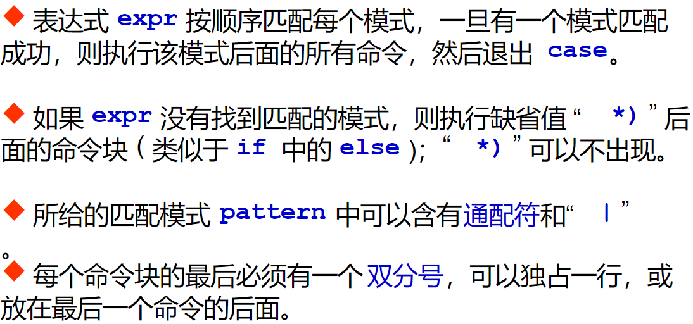
作业：磁盘使用提醒
| #!利用case语句完成操作：查看磁盘根分区利用率，当利用率小于50，提示“空间充足”；当利用率在50%~79%时，提示“请注意及时清理空间”；当超过80%，提示“系统会因此罢工的哦！
disk_used=`df |grep /$ |awk '{print $5}' |awk 'gsub("%","") {print $0}'` #gsub awk中替换字符的一个方法
echo "disk_used: " $disk_used
case "$disk_used" in # 十位 个位
[0-4]*) #*号是通配符 []匹配只能写一位数字，或者写[0-4][0-9]表示0-49
echo "空间充足" ;;
[5-7]*)
echo "请及时清理空间" ;;
[8-10]*)
echo "系统会因此罢工的哦！" ;;
*) # *)代表else
echo "error"
esac
|
FOR
| for i in {1..100} # 1到100
do
{
...... # 执行的内容
}& # {}&的意思是把命令打包到后台执行，用不同的shell,也可以写在done的后面
done
wait # wait命令 等待wait命令之前的内容执行完成才执行wait后面的
echo "finished！"
|
作业：加法表
| #!利用for语句完成操作：利用for语句完成阶梯式加法口诀表。
[root@Xuan shell-works]$ cat add_table_cbp.sh
#!/usr/bin/bash
# 输出加法表
#行 column列
# 两层循环控制输出的行和列
for i in `seq 9`
do
for j in `seq $i`
do
sum=$(( $i+$j ))
if (( $sum > 9 ));then #保持整齐
echo -n "$i + $j = $sum "
else
echo -n "$i + $j = $sum "
fi
done
echo ""
donepwd
|
作业：查看系统目录数
| #!查看指定系统下，指定后缀的文件的数目。（指定目录，和指定后缀通过read获取）
[root@Xuan shell-works]$ cat ls_file_cbp.sh
#!/usr/bin/bash
# 查看指定目录下，指定后缀的文件的数
read -p "input path[/root/home/] and suffix[txt\sh...]:" path suffix
ls $path*.$suffix > ls.txt
j=0
for i in `cat ls.txt` ; do
echo $i
j=$(( $j+1 )) # 要写成$(()),不然不会进行运算
done
echo "file count:$j"
rm -rf ls.txt
|
while
当条件为真（执行）
作业：加法表
| #!/usr/bin/bash
row=1 #行
while (($row<=9));do
col=1 #列
while (($col<=$row));do
sum=$(($col+$row))
if (( $sum > 9 ));then #保持整齐
echo -n "$col + $row = $sum "
else
echo -n "$col + $row = $sum "
fi
col=$(($col+1))
done
echo "" #换行
row=$(($row+1))
done
|
until
当条件为假（执行）
| #!/usr/bin/bash
row=1 #行
until (($row>9)) ;do
col=1 #列
until (($col>$row));do
sum=$(($col+$row))
if (( $sum > 9 ));then #保持整齐
echo -n "$col + $row = $sum "
else
echo -n "$col + $row = $sum "
fi
col=$(($col+1))
done
echo "" #换行
row=$(($row+1))
done
|
输入输出重定向
在Linux系统的命令中，可以通过各种命令输出相应的信息，这些信息可以在屏幕上显示，也可以通过文件保存结果，并将其作为其他命令的输入或操作对象。
Linux下标准输入与输出
Linux每个命令通常从它的控制终端中获取输入，将输出打印到控制终端的屏幕上。根据应用类型，可以分为标准输入、标准输出、标准错误输出
- 标准输入(STDIN):它是命令的输入，缺省和终端的键盘联
- 标准输出(STDOUT):它是命令的输出，缺省和终端的屏幕关联
- 标准错误(STDERR):它是命令的错误信息输出，缺省也和终端的屏幕关联
- 如果进程打开了额外的文件进行输入和输出，则其被设置为下一一个可用的文件描述符，从3到9
格式：命令 > 文件
正确和错误输出同时保存
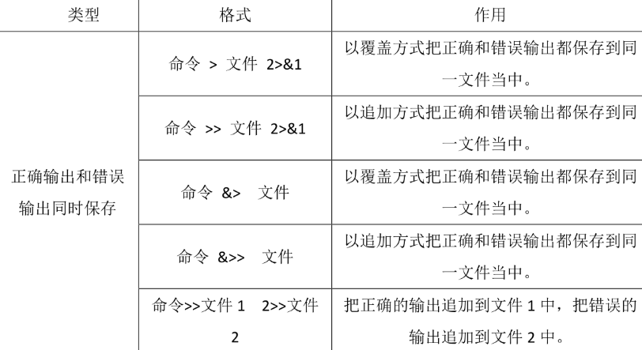
- 检测系统内存使用情况，当内存使用超过70%，给出使用提醒（提醒内容自定），将提醒内容放入
/tmp/men_warn文件夹中的以当前的日期和时间命名的文件
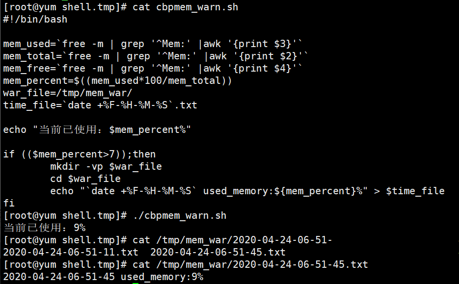